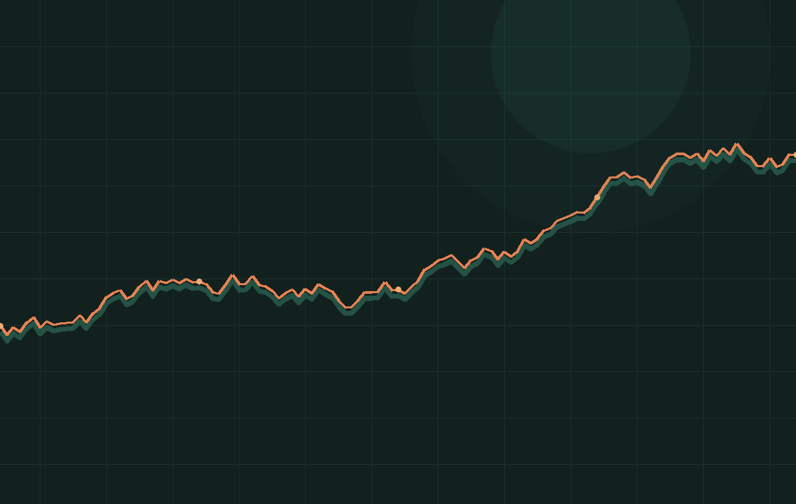

01
顺势而为，等大波动
先观察大势，只在可能出现 30% 以上波动的阶段耐心等待。趋势没有展开时，空仓也是动作。
趋势优先

不是追逐每一根 K 线，而是把注意力放到少数高赔率机会。
先观察大势，只在可能出现 30% 以上波动的阶段耐心等待。趋势没有展开时，空仓也是动作。
小时级别的波动与日线级别的趋势不是一回事。开单前先确定自己交易的时间级别，止盈止损才不会漂移。
把每一段 K 线组合当成词语和段落。看得足够多，面对当下走势时，脑中才会出现概率最大的路径。
技术指标有局限，市场不可预测。相信图表给出的信号，别让先入为主的观点替眼睛做决定。
交易不是比谁跑得快，而是一场艰难的马拉松，比拼的是耐力，是谁能活到最后。
— 语录 2 · 07把一笔交易拆成五个可检查的节点，任何一个节点模糊，都先停手。
基本面热点 + 技术面定向。没有催化与结构，优先保本金。
支撑位做多，压力位做空；趋势中关注 4 小时 Boll 下/上轨。
开单前先问离止损多远，幅度是否在承受范围内。
只给盈利仓加仓；加仓像新单一样设置止损，不摊平亏损。
反转、止盈或失效就退出；记录原因，给下一次决策留下证据。
| 节点 | 资料中的动作 | 可执行检查句 |
|---|---|---|
| 交易级别 | 先确定小时、2 小时、4 小时或日线级别 | 我准备持有多久？哪个级别证明我错了？ |
| 入场方式 | 确定性高可一次开满，不确定则小区间分批 | 如果只成交 30%，剩下的计划是什么？ |
| 止损 | 前低/前高或可承受的保证金亏损范围 | 止损触发后，我是否会无条件执行？ |
| 止盈 | 一次性止盈、分批止盈或对冲 | 行情不再符合预期时，我是否有退出按钮？ |
把“我应该”变成“我会在触发条件出现时执行”。点击卡片记录今天的自检。
收益曲线很吸引人，真正决定能否留下来的，是每一次失误的成本。
资料里最稳定的共识不是“赚多少”，而是做错时果断退出、保留下一次机会。
这是资料整理中的操作性标准；每个人都应按自身承受能力再下调。
平均盈利 × 胜率 − 平均亏损 × 败率 > 0，才有长期正期望。
从小资金试错到复利增长，容错率比刺激的倍数更重要。
输入账户规模与计划止损，看看这笔交易是否超过 5% 的资料参考线。
原话保留锋利感，旁边给出“读法”，方便从句子回到动作。
“交易不是比谁跑得快，而是一场艰难的马拉松，比拼的是耐力，是谁能活到最后。”
读法：把收益目标从速度换成存活，把“慢”当成策略。
“我实盘能活到现在，就是因为在行情做错的时候，能果断止损，活着永远比收益重要。”
读法：止损不是交易之外的惩罚，而是交易系统的组成部分。
“复盘看过的行情越多，相当于看过的书越多。”
读法：盘感不是天赋，是样本量与持续复盘共同产生的压缩记忆。
“开单前首先考虑的不是盈利多少，而是离止损位有多少。”
读法：先把错误成本写出来，再讨论收益空间。
“逆人性训练的结果，低买高卖；止损认错；抓大趋势；忍受回撤；独立思考。”
读法：把情绪问题拆成可训练的行为，而不是要求自己“永远冷静”。
“只在可能出现一波 30% 以上波动的机会时耐心等待。”
读法：不是预测每次波动，而是给自己的出手设一个更高门槛。
“严格来讲，我认为所有的交易都是趋势交易，只不过趋势的级别不一样而已。”
读法：先写清楚你交易的是哪个级别，再决定持仓周期与退出条件。
“行情必须要承认是不可预测的，我之前微博也发过很多主观性的预测，很多次都打脸。”
读法：把预测改成条件反应，市场证明你错了就退出，不和行情争论。
“我在观察行情中最重要的是看交易量，趋势行情中交易量的缩小意味着多头或者空头的衰竭。”
读法：价格方向之外，观察量能是否支持趋势继续，避免只盯一根 K 线。
“一般只有在比较大级别的趋势行情中才会考虑加仓，浮盈加仓；如果亏损加仓，我认为是在扩大亏损。”
读法：加仓必须是优势扩张，不是用新资金替旧仓解套。
“其实最好的结果就是交易过程中把自己锻炼成机器人，能够不带情绪地去交易。”
读法：把情绪管理落到预案、止损和复盘记录，而不是依赖临场意志力。
把公开数据按阶段读：行情环境 → 推测动作 → 结果 → 可迁移的教训。
| 阶段 | 市场环境 | 资料中的动作 | 结果 / 读法 |
|---|---|---|---|
| 01 | 2019.02–06 单边上涨 | 15–20 倍做多，浮盈加仓 | +4,285%热点 + 趋势的放大样本 |
| 02 | 2019.06–12 宽幅震荡 | 趋势策略反复止损 | −44%策略与环境错配 |
| 03 | 2020.01–02 减半预期 | 约 5 倍做多，浮盈加仓 | +491%催化剂明确，持仓扩大 |
| 04 | 2020.02–03 快速下跌 | 约 1 倍做空，浮盈加仓 | +49%顺势也可以是空头 |
| 05 | 2020.03–05 上涨反转 | 轻仓做空或套保，严格止损 | −8%判断错时控制回撤 |
| 06 | 2020.05–07 窄幅震荡 | 趋势策略反复止损 | −9%没有方向时少交易 |
| 07–10 | 2020.07–2021.11 多段趋势 | 低倍顺势，盈利加仓 | 持续放大不可复制的收益，不等于不可学习的流程 |
按你现在最需要的部分进入，不必从第一页线性读完。
把原始材料、整理内容与推断分开，阅读才不会把故事误当成规则。
交易阶段、系统拆解、资金管理与作者反思的主要来源。
交易级别、形态、复盘、仓位、止盈止损与纪律的原话来源。
心态、耐心、逆人性、复利与长期训练的语料来源。
以扫描页为主，本页仅做资料索引，未将不可验证内容写成结论。
这里整理的是公开材料里的方法与表达，不是收益承诺，也不是对历史收益的复刻指南。把“高杠杆、高收益”当成风险样本，把“等待、止损、复盘、暂停”当成可迁移的训练。
SOURCE STATUS: quoted / summarized / inferred clearly labeled